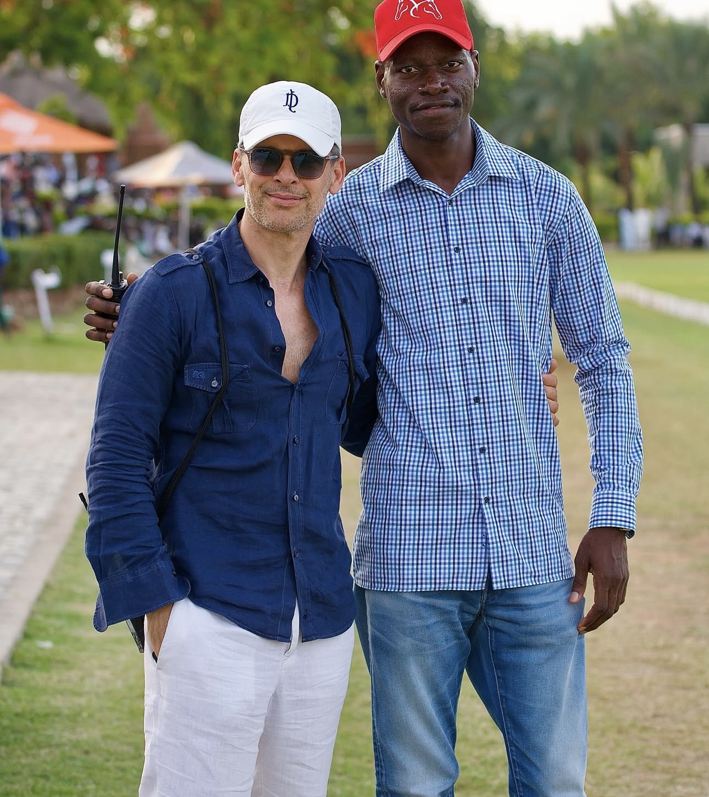
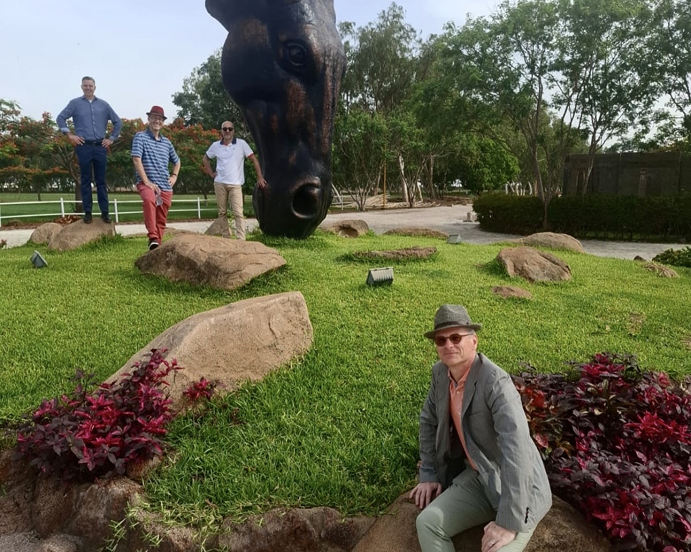
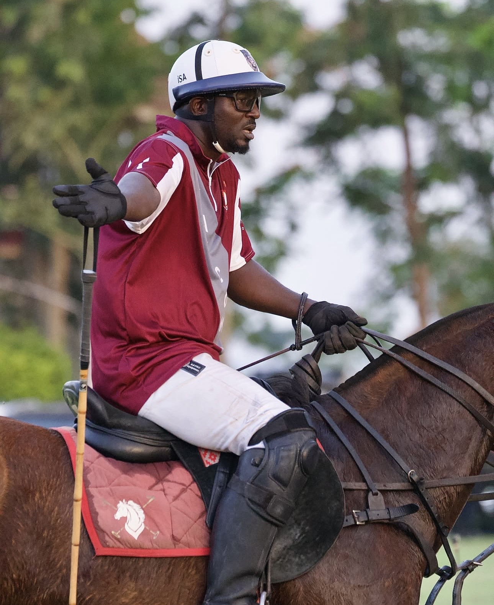
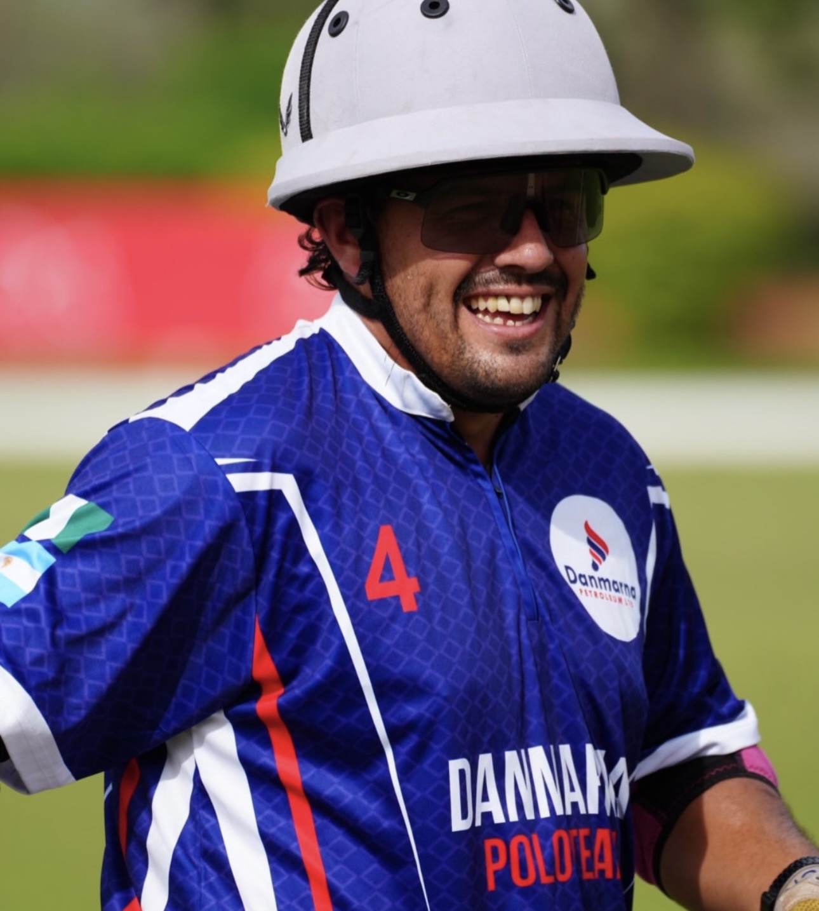
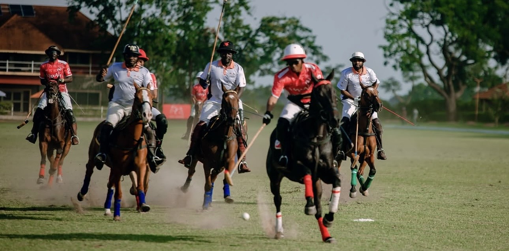

Founder & Patron
Aminu Bello
The visionary whose love of polo and Africa shaped Fifth Chukker from a single field into an estate.

Our Heritage
From a single field in 2001 to West Africa's premier polo and lifestyle destination — the story of Fifth Chukker.
Home / Our Story
Est. 2001
Founded on the banks of Kangimi Dam, Fifth Chukker rose from a single polo field into a 3,000-hectare estate and West Africa's premier polo destination — a place where the Sport of Kings is woven together with the warmth and colour of African hospitality.
The Journey
The first polo field is established on the banks of Kangimi Dam, planting the seed for an estate unlike any other in West Africa.
Charity polo begins, channelling the passion of the field into education and healthcare for vulnerable children across Nigeria.
Global patrons and champions arrive, elevating Fifth Chukker onto the world stage of high-goal polo.
High-goal polo is paired with Pink Hope, a breast-cancer awareness initiative in partnership with MTN.
Fifty-six resort stays, fine dining, weddings and a signature magazine transform the estate into a complete lifestyle destination.
A hotel and spa, a championship golf course and the Kangimi masterplan chart the next chapter of the Fifth Chukker story.
Why Fifth Chukker
Three immaculate fields, 300 stables and a calendar of international tournaments that draw the finest players on earth.
African hospitality at its most generous — farm-to-table dining and landscaped villas set among 3,000 hectares of natural beauty.
Through UNICEF, Pink Hope and community development, every chukker plays a part in changing lives.
Leadership

The visionary whose love of polo and Africa shaped Fifth Chukker from a single field into an estate.

A seasoned high-goal professional guiding the club's tournaments, ponies and players to world-class standards.

The steward of estate and guest experience, ensuring every stay reflects authentic African luxury.
Recognition

Be Part of the Story
Join the patrons, players and guests who have made Fifth Chukker their home in Africa.